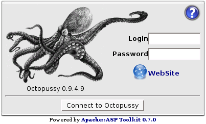

Login

Login Box
By default, you can login to Octopussy with login "
admin
" and password "
admin
".
You can change your password, language and interface theme in
'User Preferences'
.
 'User Preferences'.
'User Preferences'.